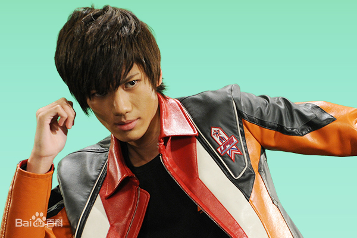
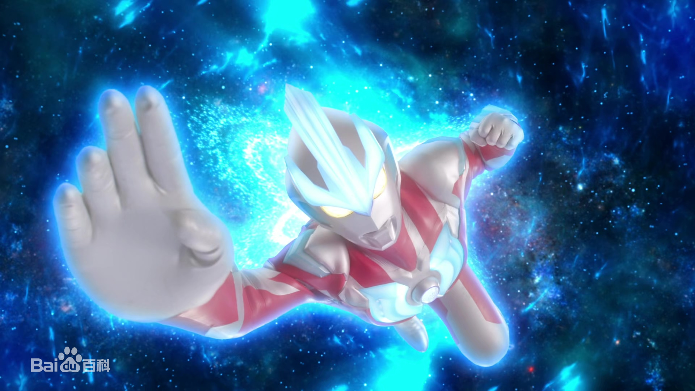

银河奥特曼

身份背景:
因为对“生命”产生了不同的想法，银河奥特曼与黑暗路基艾尔产生了分歧，一个支持停止一切生命来保持永恒的黑暗路基艾尔，而另一方则支持生命是不断延续这一说法的银河奥特曼，后在火花人偶大战中曾与黑暗路基艾尔进行过激烈的战斗。平时将自身的变为火花人偶隐藏在银河火花里，银河火花作为礼堂家族的圣物被一代代传人守护着。
外貌特征:
银河奥特曼的身体是红银相间的左右对称花纹，头部、双耳、胸前、肩部、手腕、双腿均镶嵌有由“等离子火花”组成的蓝色水晶。发动技能时，水晶会发出蓝、黄、红、绿、紫、粉等不同颜色的光芒。更能结合斯特利姆手镯的力量，变身成为银河奥特曼斯特利姆形态，获得了奥特六兄弟的能量，可使出奥特曼兄弟六人的各种技能，更能融合六兄弟的力量使出“宇宙奇迹光线”。
角色介绍:
礼堂光
礼堂光是银河奥特曼在地球的人间体，高挑阳光的年轻少年。离开是摇滚歌手的父母的身边，梦想将来成为冒险家。挑战心和正义感都非常高。高中二年级的暑假返回到自己出生的城市——降星镇。
在降星镇与银河分别后，以世界第一的冒险家为目标展开冒险，游历英国等各个国家。2年后，在访问的雫山之丘上遭遇了某事件，继而他的思念与银河奥特曼再度共鸣，以光芒点亮了银河火花，礼堂光也再次与银河奥特曼一体化，变身战斗。因其活跃而被选中加入UPG特搜队成为了队员。富有正义感，被阵野队长评价为有着即便遇到再大的困境也能逆难而上的品质。
银河奥特曼
身高：微型~无限大 [50]
体重：0~无限大
战力数据：全数据无法计算
银河奥特曼原本的姿态，身体色调为红·银两色。身高和体重可以在0-无限大之间变化；身上镶嵌有等离子火花能量水晶，在发动不同属性能力的技能时，水晶会发出蓝、黄、红、绿、紫、粉等不同颜色相互对应的光芒。
银河与礼堂光合体时，变身后的意识通常由礼堂光主导，施展银河的各种技能应敌（战斗过程中有银河本体意识接手战斗的场合）；在与礼堂光分开时，则是银河自身的意识主导，更能有效地发挥自身的战斗力 。